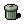
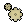
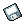
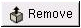

- Table of Contents
- Session Properties
- Known Bugs and Limitations
- Authors
- License
Session Properties
Session Properties monitors the state of current GNOME running applications and capplets, as seen in Figure 1. Session Properties displays a list of all the applications and capplets currently running, what will happen to the program if you logout, and the state of the application. It allows you to change the style and priority of each program. You can shut down applications, if you wish, and those applications will be removed from your GNOME session. You can also use Session Properties to kill a GNOME application and remove it from session management so it will not be restarted when you log in next time. Of course, there are other ways to kill an application, such as using an explicit kill command, but they would not prevent an application from being restarted if it has the Respawn Style. The only way to permanently remove such an application is with the Remove button.
 | Note: |
|---|---|
Applications that are not 100 percent GNOME compliant are not managed by the session manager. To check if an application is GNOME compliant start Session Properties. If the application is shown in the list it is compliant with GNOME and is managed by the session manager. In order to restart non-GNOME complaint applications when you log in see Non-session-managed Startup Programs. |
Saving the GNOME Session
To save your GNOME session select Main Menu->Programs->Settings->Session->Save Current Session . This causes all the applications to save their current state: the application's current settings and work (open files and unsaved data).
| Note: |
|---|---|
Applications that are not compliant with GNOME will not save the current settings or work associated with the application. It is recommended that you save your work periodically in case of a calamity. |
Priority Order
The priority order sets the order the applications will start in the GNOME Session Manager. This lets applications be started after other applications or capplets they are dependent upon. If an application needs to start before the window manager , like a server, you can change the order number to be lower than the window manager's order number. Usually most applications will have an order number of 50. If the application or capplet is a part of the window manager or critical system then it should be assigned a lower order number.
 | Important: |
|---|---|
The priority order is for advanced user only. Unless you are familiar with the priority order you should not change it. |
Style Options
The Style option sets the restart style of each application running in the GNOME Session Manager. When an application closes the style option controls what happens to the program. The style most applications run with is Normal. There are currently four styles of applications and capplets.
Normal - This style starts the application when you log back in, but it allows the application to close normally given a kill command. The vast majority of applications you run will have this style and it is safe to assume this style when in doubt. All you will see is a blank space in the style row unlike other styles.
Respawn - This style starts the application or capplet again once it is given the kill command. It is used primarily for applications or servers that need to run continuously regardless of user intervention. Two examples of applications running with the respawn style is the GNOME Session Manager and the GNOME Panel.
 Trash - This style indicates applications or capplets that are only temporary. When you logout, the applications with this style are killed, after saving their data, and do not restart when you login again.
Settings - This style indicates applications or capplets used only for storing and relaying your settings to GNOME and GNOME compliant applications. These applications and capplets usually have a lower priority order and handle configurations.
| Important: |
|---|---|
The Style option is for advanced users only. Unless you are familiar with the Style settings you should not change it. |
State
The state of an application tells you what the application or capplet is doing, at the moment, in the GNOME Session Manager. Most of the time you will see they are either in the Inactive state or in the Running state.
Inactive - Applications in the inactive state are either waiting to start or have finished running. These applications are waiting for you or another user to run them. Unlike other states the inactive state has no icon associated with it. All you will see is a blank space in the state row.
 Running - Applications in the running state are running normally in your session. This is the default state for applications and the most common.
Starting - Applications in the starting state are being given time to get running. Most applications go to the running state almost instanteously. You usually won't see this state unless it takes a little bit of time for the application to start.
 Saving - Applications in the saving state are saving their current settings and data. This state occurs when the GNOME session manager tells each application to save when you logout or when you save the session manually.
Unknown - Applications in the unknown state do not have any contact with the GNOME session manager. This usually means the application has crashed. If this happens highlight the application in Session Properties and then click the Remove button.
Remove Button
 The Remove button removes the application from the GNOME session manager and kills the application. You should use the Remove button to kill an application after it crashes or when its state is Respawn.